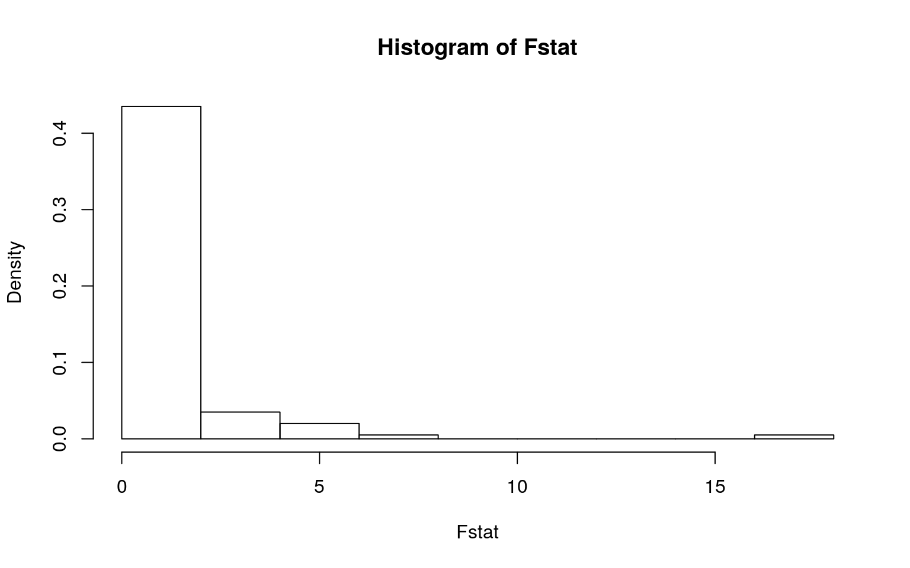
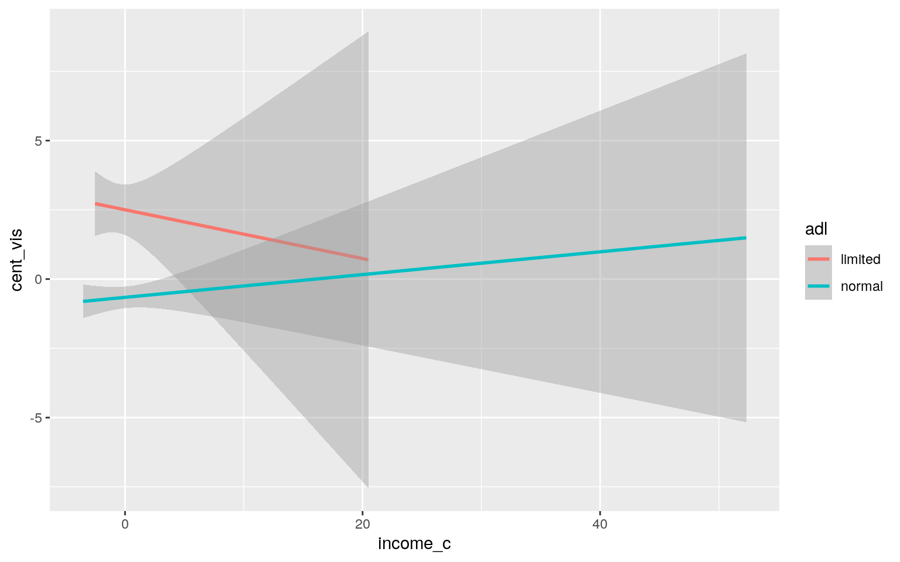
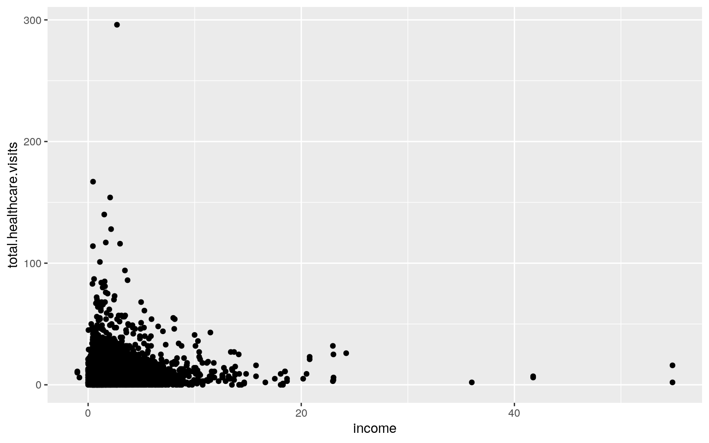
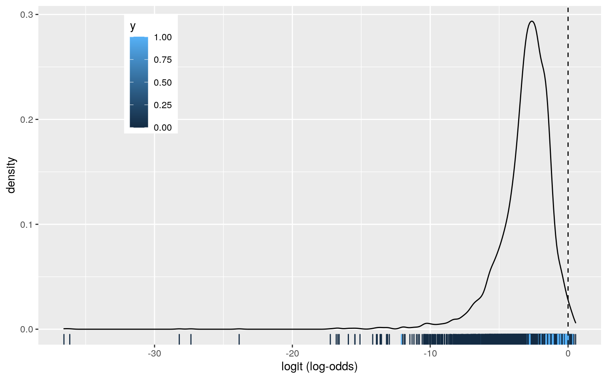
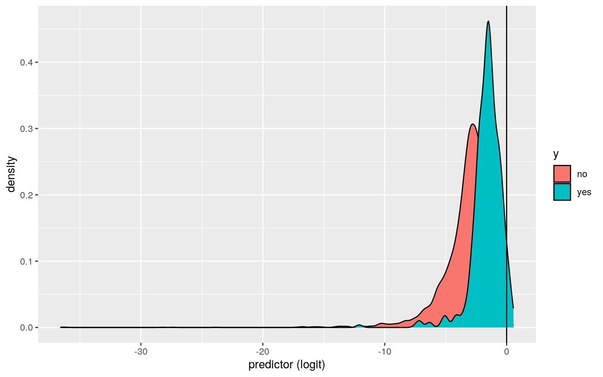
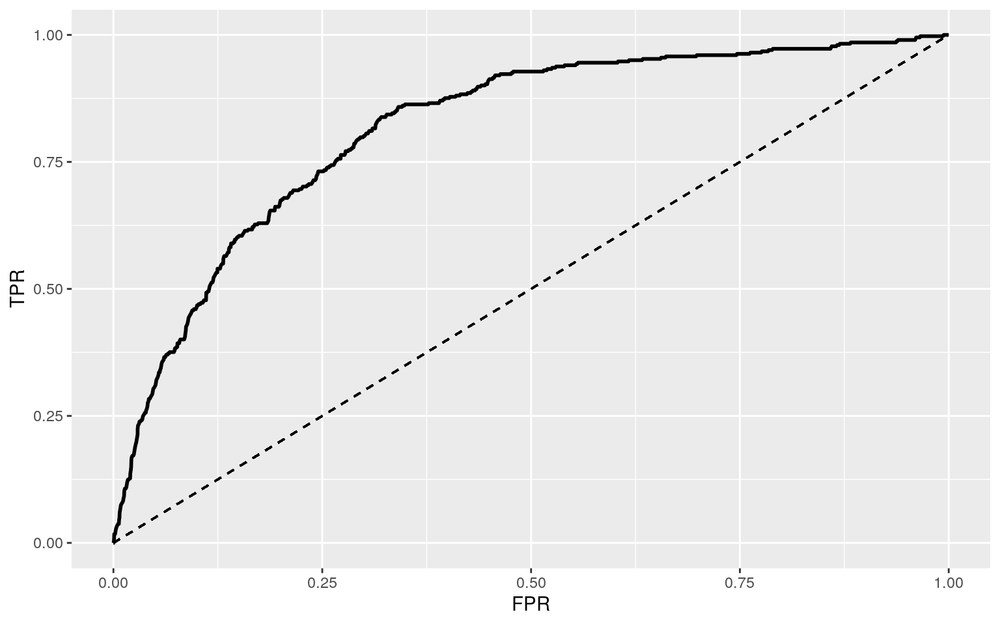

The dataset I used comes from the package AES and is originating from the US National Medical Expenditure Survey done in 1987 and 1989. This survey targeted 4,406 individuals who are older than 65 years old (indicating that they are covered by Medicare) that were admitted to long term care facilities. It tracks 19 variables including the number of various types of visits per patient (which I have combined into one overall Total Healthcare Visits variable), alongside data such as their self-reported health, number of chronic conditions, disability, physical region, age, gender, education level, marriage, income, job status, insurance and medicaid status. Overall, I would like to analyze the connections between these various personal characteristics with the amount of hospital visits that these patients take.
Visits <- NMES1988.edited %>% mutate(age = age *10) %>% select(8:21)
#Manova
MANOVA_dat <- manova(cbind(total.healthcare.visits, chronic, age, school, income)~health, data= Visits)
summary(MANOVA_dat)## Df Pillai approx F num Df den Df Pr(>F)
## health 2 0.16425 78.737 10 8800 < 2.2e-16 ***
## Residuals 4403
## ---
## Signif. codes: 0 '***' 0.001 '**' 0.01 '*' 0.05 '.' 0.1
' ' 1#univariate Anova
summary.aov(MANOVA_dat)## Response total.healthcare.visits :
## Df Sum Sq Mean Sq F value Pr(>F)
## health 2 15708 7853.9 54.049 < 2.2e-16 ***
## Residuals 4403 639803 145.3
## ---
## Signif. codes: 0 '***' 0.001 '**' 0.01 '*' 0.05 '.' 0.1
' ' 1
##
## Response chronic :
## Df Sum Sq Mean Sq F value Pr(>F)
## health 2 1049.3 524.64 331.21 < 2.2e-16 ***
## Residuals 4403 6974.5 1.58
## ---
## Signif. codes: 0 '***' 0.001 '**' 0.01 '*' 0.05 '.' 0.1
' ' 1
##
## Response age :
## Df Sum Sq Mean Sq F value Pr(>F)
## health 2 1959 979.46 24.675 2.204e-11 ***
## Residuals 4403 174771 39.69
## ---
## Signif. codes: 0 '***' 0.001 '**' 0.01 '*' 0.05 '.' 0.1
' ' 1
##
## Response school :
## Df Sum Sq Mean Sq F value Pr(>F)
## health 2 1694 846.8 62.265 < 2.2e-16 ***
## Residuals 4403 59880 13.6
## ---
## Signif. codes: 0 '***' 0.001 '**' 0.01 '*' 0.05 '.' 0.1
' ' 1
##
## Response income :
## Df Sum Sq Mean Sq F value Pr(>F)
## health 2 410 204.781 24.193 3.551e-11 ***
## Residuals 4403 37269 8.464
## ---
## Signif. codes: 0 '***' 0.001 '**' 0.01 '*' 0.05 '.' 0.1
' ' 1Since the MANOVA test shows that there is significance, univariate ANOVA’s were done. These show that each variable tested (number of total healthcare visits, number of chronic conditions, age, years of education, and income) all show mean differences across various levels of health. When discussing the assumptions for the manova test, the data we have is random and independent, the data is linear between some variables, the data shouldn’t have extreme outliers. When considering normality and equal variance, this data does not show that. This could mean that any conclusions gained from the MANOVA may be flawed.
#post-hoc
pairwise.t.test(Visits$total.healthcare.visits,Visits$health, p.adj="none")##
## Pairwise comparisons using t tests with pooled SD
##
## data: Visits$total.healthcare.visits and Visits$health
##
## average excellent
## excellent 3.6e-06 -
## poor < 2e-16 < 2e-16
##
## P value adjustment method: nonepairwise.t.test(Visits$chronic,Visits$health, p.adj="none")##
## Pairwise comparisons using t tests with pooled SD
##
## data: Visits$chronic and Visits$health
##
## average excellent
## excellent <2e-16 -
## poor <2e-16 <2e-16
##
## P value adjustment method: nonepairwise.t.test(Visits$age,Visits$health, p.adj="none")##
## Pairwise comparisons using t tests with pooled SD
##
## data: Visits$age and Visits$health
##
## average excellent
## excellent 0.036 -
## poor 1.4e-10 2.0e-09
##
## P value adjustment method: nonepairwise.t.test(Visits$school,Visits$health, p.adj="none")##
## Pairwise comparisons using t tests with pooled SD
##
## data: Visits$school and Visits$health
##
## average excellent
## excellent 1.5e-05 -
## poor < 2e-16 < 2e-16
##
## P value adjustment method: nonepairwise.t.test(Visits$income,Visits$health, p.adj="none")##
## Pairwise comparisons using t tests with pooled SD
##
## data: Visits$income and Visits$health
##
## average excellent
## excellent 1.1e-05 -
## poor 1.2e-06 7.6e-12
##
## P value adjustment method: noneWhen first doing post-hoc analysis, it shows that there are differences between all groups in all variables when using the original alpha of .05.
#prob of type I error
1-(.95)^24## [1] 0.708011#bon
.05/ 24## [1] 0.002083333However, we did 1 MANOVA, 5 ANOVA’s, and 3x5 post-hoc analyses. This means that the probability of one type I error is 0.708011. To reduce this, we will adjust the significance level using a bonferoni correction with a new alpha of 0.002083333.
#post-hoc- corrected
pairwise.t.test(Visits$total.healthcare.visits,Visits$health, p.adj="none")$p.value<0.05/24## average excellent
## excellent TRUE NA
## poor TRUE TRUEpairwise.t.test(Visits$chronic,Visits$health, p.adj="none")$p.value<0.05/24## average excellent
## excellent TRUE NA
## poor TRUE TRUEpairwise.t.test(Visits$age,Visits$health, p.adj="none")$p.value<0.05/24## average excellent
## excellent FALSE NA
## poor TRUE TRUEpairwise.t.test(Visits$school,Visits$health, p.adj="none")$p.value<0.05/24## average excellent
## excellent TRUE NA
## poor TRUE TRUEpairwise.t.test(Visits$income,Visits$health, p.adj="none")$p.value<0.05/24## average excellent
## excellent TRUE NA
## poor TRUE TRUE# Perform a MANOVA testing whether any of your numeric variables (or a subset of them, if including them all is unreasonable or doesn't make sense) show a mean difference across levels of one of your categorical variables (3). If they do, perform univariate ANOVAs to find response(s) showing a mean difference across groups (3), and perform post-hoc t tests to find which groups differ (3). Discuss the number of tests you have performed, calculate the probability of at least one type I error (if unadjusted), and adjust the significance level accordingly (bonferroni correction) before discussing significant differences (3). Briefly discuss some of the MANOVA assumptions and whether or not they are likely to have been met here (no need for anything too in-depth) (2).When using the new p-value, we see that the comparison between average health and excellent health across income levels is no longer significant, while no other significant change.
Visits %>% group_by(insurance) %>% count()## # A tibble: 2 x 2
## # Groups: insurance [2]
## insurance n
## <fct> <int>
## 1 no 985
## 2 yes 3421set.seed(348)
library(vegan)
dists <- Visits%>%select(total.healthcare.visits, income)%>%dist
adonis(dists~insurance,data=Visits)##
## Call:
## adonis(formula = dists ~ insurance, data = Visits)
##
## Permutation: free
## Number of permutations: 999
##
## Terms added sequentially (first to last)
##
## Df SumsOfSqs MeanSqs F.Model R2 Pr(>F)
## insurance 1 2952 2951.93 18.834 0.00426 0.001 ***
## Residuals 4404 690237 156.73 0.99574
## Total 4405 693189 1.00000
## ---
## Signif. codes: 0 '***' 0.001 '**' 0.01 '*' 0.05 '.' 0.1
' ' 1SST<- sum(dists^2)/4406
SSW<-Visits%>%group_by(insurance)%>% select(insurance,total.healthcare.visits,income)%>%
do(d=dist(.[-1],"euclidean"))%>%ungroup()%>%
summarize(sum(d[[1]]^2)/985 + sum(d[[2]]^2)/3421)%>%pull
F_obs<-((SST-SSW)/(2-1))/(SSW/(4406-2))
Fstat<-replicate(100,{
new <- Visits%>%mutate(insurance=sample(insurance))
SSW <- new%>%group_by(insurance)%>%select(insurance,total.healthcare.visits, income)%>%
do(d=dist(.[-1],"euclidean"))%>%ungroup()%>%
summarize(sum(d[[1]]^2)/985 + sum(d[[2]]^2)/3421)%>%pull
((SST-SSW)/1)/(SSW/4404)
})
{hist(Fstat,prob = T); abline(v=F_obs, col="blue", add=T)}
mean(Fstat>F_obs)## [1] 0The null hypothesis is that mean total healthcare visits and mean income are equal across different levels of insurance(I.E yes insurance and no insurance). The alternative hypothesis is that mean total healthcare visits and mean income are not equal across different levels of insurance. To test this, we did a MANOVA in a randomization test. When looking at the results, it seems that the total healthcare visits and income are not equal across different levels of insurance, with a p value of .001.
visits_lin <- Visits %>% mutate(cent_vis = total.healthcare.visits-mean(total.healthcare.visits), income_c= income- mean(income))
fit <- lm(cent_vis ~ income_c*adl, data = visits_lin)
summary(fit)##
## Call:
## lm(formula = cent_vis ~ income_c * adl, data =
visits_lin)
##
## Residuals:
## Min 1Q Median 3Q Max
## -11.960 -6.551 -2.848 2.482 287.414
##
## Coefficients:
## Estimate Std. Error t value Pr(>|t|)
## (Intercept) 2.50218 0.41650 6.008 2.04e-09 ***
## income_c -0.08814 0.17795 -0.495 0.620
## adlnormal -3.16195 0.46427 -6.811 1.10e-11 ***
## income_c:adlnormal 0.12924 0.19019 0.680 0.497
## ---
## Signif. codes: 0 '***' 0.001 '**' 0.01 '*' 0.05 '.' 0.1
' ' 1
##
## Residual standard error: 12.13 on 4402 degrees of
freedom
## Multiple R-squared: 0.01135, Adjusted R-squared: 0.01068
## F-statistic: 16.85 on 3 and 4402 DF, p-value: 7.022e-11ggplot(visits_lin, aes(x= income_c, y=cent_vis, group= adl)) + geom_smooth(method = "lm", aes(color=adl)) We fit a linear regression model between the total healthcare visits and income across different ADLs. When looking at the model, we can see the individual predictors and their coefficient values. Intercept indicates that when one has an average income and is limited in activities of daily living, they will have about 2.5 more healthcare visits than the average. Further, when looking at income, for every 10 thousand dollars increase in family income, they will have 0.08814 less healthcare visits. This indicates that increases in income decreases healthcare visits. Similarly, when looking at individuals who are not limited in activites of daily living, they have 3.16195 less healthcare visits than individuals at average income with limitations. This makes sense as limitations usually indicate that someone has health issues that may require more visits. When looking at the interaction between ADLnormal and income, with every 10k increase in family income or a change in limitation status from limited to normal, there is a .129 increase in hospital visits. This was interesting as above we see that these kind of changes decrease number of hospital visits. Something about the interaction between the two changes this, which could be due to the lack of significance of income. This model does only explain about 1.07% of the variation in the total healthcare visits which may be improved with further addition of other variables or variables with more levels.
#assumptions
#linearity
ggplot(Visits) + geom_point(aes(x= income, y=total.healthcare.visits))
#Residual normality
residuals <- fit$residuals
shapiro.test(residuals)##
## Shapiro-Wilk normality test
##
## data: residuals
## W = 0.61273, p-value < 2.2e-16#homoskedasticity
bptest(fit)##
## studentized Breusch-Pagan test
##
## data: fit
## BP = 0.97241, df = 3, p-value = 0.8079When looking at the assumptions, we will focus on linearity, residual normality and homoskedasticity. A scatterplot of the data does not show linearity. This could potentially be improved with a logarithmic transformation of the data. For residual normality, we did a shapiro-wilkes test that showed significance indicating that it is not normal. Finally, for homoskedasticity, we ran a BP test that indicated that the assumption of homoskedasticity was met.
summary(fit)$coef## Estimate Std. Error t value Pr(>|t|)
## (Intercept) 2.5021831 0.4165046 6.0075766 2.035142e-09
## income_c -0.0881409 0.1779544 -0.4953005 6.204128e-01
## adlnormal -3.1619535 0.4642695 -6.8105985 1.103033e-11
## income_c:adlnormal 0.1292412 0.1901902 0.6795365
4.968337e-01coeftest(fit, vcov = vcovHC(fit))##
## t test of coefficients:
##
## Estimate Std. Error t value Pr(>|t|)
## (Intercept) 2.502183 0.446283 5.6067 2.188e-08 ***
## income_c -0.088141 0.154215 -0.5715 0.5677
## adlnormal -3.161953 0.488634 -6.4710 1.080e-10 ***
## income_c:adlnormal 0.129241 0.162409 0.7958 0.4262
## ---
## Signif. codes: 0 '***' 0.001 '**' 0.01 '*' 0.05 '.' 0.1
' ' 1When re-running the regression using robust standard errors, we see very little change in the coefficients. However, we do see some changes in the standard errors. The intercept SE increases, corresponding to an increase in P-value. The income_c SE decreases, corresponding to an decrease in P-value. The adlnormal SE increases, corresponding to an increase in P-value. Finally, the SE for the interaction between income_c and ADLnormal decreases which corresponds to a decrease in p-value.
set.seed(348)
fit2<-lm(cent_vis ~ income_c*adl, data = visits_lin)
resids<-fit2$residuals
fitted<-fit2$fitted.values
resid_resamp<-replicate(5000,{
new_resids<-sample(resids,replace=TRUE)
visits_lin$new_cent_vis<-fitted+new_resids
fit2<-lm(new_cent_vis~income_c*adl, data=visits_lin)
coef(fit2)
})
resid_resamp%>%t%>%as.data.frame%>%summarize_all(sd)%>%pivot_longer(1:4,names_to = "Coefficient", values_to = "Bootstrapped SE")## # A tibble: 4 x 2
## Coefficient `Bootstrapped SE`
## <chr> <dbl>
## 1 (Intercept) 0.414
## 2 income_c 0.180
## 3 adlnormal 0.460
## 4 income_c:adlnormal 0.191#non-bootstrap robust SE
coeftest(fit, vcov = vcovHC(fit))##
## t test of coefficients:
##
## Estimate Std. Error t value Pr(>|t|)
## (Intercept) 2.502183 0.446283 5.6067 2.188e-08 ***
## income_c -0.088141 0.154215 -0.5715 0.5677
## adlnormal -3.161953 0.488634 -6.4710 1.080e-10 ***
## income_c:adlnormal 0.129241 0.162409 0.7958 0.4262
## ---
## Signif. codes: 0 '***' 0.001 '**' 0.01 '*' 0.05 '.' 0.1
' ' 1#non-bootstrap SE
summary(fit)$coef## Estimate Std. Error t value Pr(>|t|)
## (Intercept) 2.5021831 0.4165046 6.0075766 2.035142e-09
## income_c -0.0881409 0.1779544 -0.4953005 6.204128e-01
## adlnormal -3.1619535 0.4642695 -6.8105985 1.103033e-11
## income_c:adlnormal 0.1292412 0.1901902 0.6795365
4.968337e-01When re-running the linear model with bootstrapped SE’s, there are slight differences. The bootstrapped SE’s are closer to the non-robust SE’s. Specifically, the intercept for the bootstrapped SE is .414, which is closer to the npn-robust SE of .417 vs the robust model’s .446. This trend continues with each of the coefficients, indicating that the bootstrapped values potentially have p values closer to the non-robust model’s coefficient’s p values.
data <- Visits %>% mutate(y = recode(medicaid, "yes" = 1, "no" = 0)) %>% mutate(school_c = school-mean(school), income_c= income- mean(income))
limlog<-glm(y~income_c+school_c, data=data, family=binomial)
summary(limlog)##
## Call:
## glm(formula = y ~ income_c + school_c, family =
binomial, data = data)
##
## Deviance Residuals:
## Min 1Q Median 3Q Max
## -1.4181 -0.4584 -0.2968 -0.1421 4.9175
##
## Coefficients:
## Estimate Std. Error z value Pr(>|z|)
## (Intercept) -3.16189 0.10408 -30.378 <2e-16 ***
## income_c -0.60754 0.06243 -9.731 <2e-16 ***
## school_c -0.21151 0.01522 -13.897 <2e-16 ***
## ---
## Signif. codes: 0 '***' 0.001 '**' 0.01 '*' 0.05 '.' 0.1
' ' 1
##
## (Dispersion parameter for binomial family taken to be 1)
##
## Null deviance: 2691.1 on 4405 degrees of freedom
## Residual deviance: 2223.1 on 4403 degrees of freedom
## AIC: 2229.1
##
## Number of Fisher Scoring iterations: 7exp(coeftest(limlog))##
## z test of coefficients:
##
## Estimate Std. Error z value Pr(>|z|)
## (Intercept) 0.042346 1.109693 0e+00 1
## income_c 0.544689 1.064425 1e-04 1
## school_c 0.809358 1.015336 0e+00 1When creating a logistic model for if someone has medicaid based off of income and number of years of education, we get an intercept reference group of individuals with average education and average family income. To interpret the coefficients, we exponetiated each one. When looking at income, we see that for every 10k above average income one has, there is about a 45.5% decrease in odds of having medicaid. This makes sense as medicaid is a healthcare insurance program for low income individuals. Similarly, for every year of education above average, there is about a 19.17% decrease in odds of having medicaid. This also makes sense as income usually increases with increased education, but this is not a guarantee.
#confusion matrix
data$prob <- predict(limlog,type="response")
data$predicted <- ifelse(data$prob>.5,"No Medicaid","Yes Medicaid")
table(truth=data$y, prediction=data$predicted)%>%addmargins## prediction
## truth No Medicaid Yes Medicaid Sum
## 0 24 3980 4004
## 1 15 387 402
## Sum 39 4367 4406#class diag
class_diag(data$prob,data$y)## acc sens spec ppv auc
## 1 0.9067181 0.03731343 0.994006 0.3846154 0.8178789The class diag function returns the accuracy, sensitivity, specificity, and precision. The accuracy value of .91 indicates that 91% of the time we will get an accurate prediction. However, the low sensitivity of .04 indicates that this model is not good at predicting individuals who do have medicaid. This makes sense as medicaid is not just based off of income which is one of the variables that was fed into the model. This model is good at predicting if they don’t have medicaid with a specificity of .994, while the PPV is lower at .385. Overall, according to the AUC, this model is good at an auc of .818.
#density plot
data$logit<-predict(limlog)
ggplot(data,aes(logit, fill=y))+geom_density(alpha=.3)+geom_rug(aes(logit,color=y))+
geom_vline(xintercept=0,lty=2)+theme(legend.position=c(.2,.8))+xlab("logit (log-odds)")
data %>% mutate(y=as.factor(medicaid)) %>% ggplot() + geom_density(aes(logit, fill=y)) + geom_vline(xintercept=0)+xlab("predictor (logit)") There are two density plots as I used one method we have used previously but no matter what I tweaked, I did not get a density plot that we saw previously. This graph shows that some of the points may be very rare and have
#ROC
ROCplot<-ggplot(data)+geom_roc(aes(d=y,m=prob), n.cuts=0)+geom_segment(aes(x=0,y=0,xend=1,yend=1),lty=2)+xlab("FPR")+ylab("TPR")
ROCplot
calc_auc(ROCplot)## PANEL group AUC
## 1 1 -1 0.8178911The AUC calculated here matched the AUC calculated by the Class Diag essentially confirming that this model is a good model of predicting medicaid from income and education with an AUC of .8179.
#model
data2 <- Visits %>% mutate(y = recode(medicaid, "yes" = 1, "no" = 0), insurance = recode(insurance, "yes" = 1, "no" = 0), afam= recode(afam, "yes" = 1, "no" = 0), adl = recode(adl, "limited" = 1, "normal" = 0), married = recode(married, "yes" = 1, "no" = 0), employed = recode(employed, "yes" = 1, "no" = 0)) %>% mutate(school_c = school-mean(school), income_c= income- mean(income), age_c= age- mean(age), chronic_c= chronic- mean(chronic), cent_vis = total.healthcare.visits-mean(total.healthcare.visits))
log<-glm(y~income_c+school_c+chronic_c+age_c+cent_vis+health+adl+region+afam+gender+married+employed+insurance, data=data2, family=binomial)
summary(log)##
## Call:
## glm(formula = y ~ income_c + school_c + chronic_c +
age_c + cent_vis +
## health + adl + region + afam + gender + married +
employed +
## insurance, family = binomial, data = data2)
##
## Deviance Residuals:
## Min 1Q Median 3Q Max
## -2.1868 -0.2507 -0.1366 -0.0722 3.4901
##
## Coefficients:
## Estimate Std. Error z value Pr(>|z|)
## (Intercept) -1.979259 0.225839 -8.764 < 2e-16 ***
## income_c -0.305227 0.054431 -5.608 2.05e-08 ***
## school_c -0.122515 0.018645 -6.571 5.00e-11 ***
## chronic_c 0.099762 0.049498 2.015 0.04386 *
## age_c -0.004180 0.010357 -0.404 0.68653
## cent_vis 0.008720 0.005263 1.657 0.09757 .
## healthexcellent -0.236965 0.330326 -0.717 0.47315
## healthpoor 0.234836 0.175489 1.338 0.18084
## adl 0.744408 0.154937 4.805 1.55e-06 ***
## regionnortheast 0.718356 0.239524 2.999 0.00271 **
## regionother 0.573905 0.208613 2.751 0.00594 **
## regionwest 1.472855 0.232481 6.335 2.37e-10 ***
## afam 0.482242 0.155838 3.095 0.00197 **
## gendermale -0.812448 0.166172 -4.889 1.01e-06 ***
## married -0.521942 0.163152 -3.199 0.00138 **
## employed -1.003902 0.415483 -2.416 0.01568 *
## insurance -2.740726 0.160913 -17.032 < 2e-16 ***
## ---
## Signif. codes: 0 '***' 0.001 '**' 0.01 '*' 0.05 '.' 0.1
' ' 1
##
## (Dispersion parameter for binomial family taken to be 1)
##
## Null deviance: 2691.1 on 4405 degrees of freedom
## Residual deviance: 1533.2 on 4389 degrees of freedom
## AIC: 1567.2
##
## Number of Fisher Scoring iterations: 7data2$prob <- predict(log,type="response")
class_diag(data2$prob,data2$y)## acc sens spec ppv auc
## 1 0.9269178 0.4378109 0.976024 0.6470588 0.9274215The class diag function for the full set of variables returns the accuracy, sensitivity, specificity, and precision. The accuracy value of .927 indicates that 92.7% of the time we will get an accurate prediction of medicaid based off of all of the variables. This is slightly better than using the limited variables in the first logistical model. The sensitivity has also improved significantly from .04 to .438, which indicates this model is much better at predicting individuals who do have medicaid. However, this is still below .5. The specificity has reduced a bit from .994 to .976, showing that it is slightly worse at predicting who doesn’t have medicaid but it is still very good. The ppv has improved significantly from .385 to now .647. Overall, according to the AUC, this model is great at an auc of .927 which is better than the other model with an AUC of .8179. This is most likely because of the incorporation of all the other variables improving sensitivity.
#10-fold
set.seed(348)
k=10
dat<-data2[sample(nrow(data2)),]
folds<-cut(seq(1:nrow(data2)),breaks=k,labels=F)
diags<-NULL
for(i in 1:k){
train<-dat[folds!=i,]
test<-dat[folds==i,]
truth<-test$y
fit3<-glm(y~income_c+school_c+chronic_c+age_c+cent_vis+health+adl+region+afam+gender+married+employed+insurance, data=train, family=binomial)
probs<-predict(fit3,newdata = test,type="response")
diags<-rbind(diags,class_diag(probs,truth))
}
summarize_all(diags,mean)## acc sens spec ppv auc
## 1 0.9253303 0.4280769 0.9750076 0.6350023 0.9221913When performing 10-fold CV, overall the metrics of the model are very similar. Accuracy in 10 fold is .925 as compared to .927, sens is .428 vs .438, spec is .975 vs .976, and ppv is .635 vs .647. Overall, 10-fold cv seems to reduce the metric be a bit, which is reflected in its AUC being .9222 vs the non-10-fold AUC of .927.
#lasso
data3 <- data2
data3$health <- factor(data3$health)
data3$region <- factor(data3$region)
set.seed(348)
y<-as.matrix(data3$y)
x<-model.matrix(y~income_c+school_c+chronic_c+age_c+cent_vis+health+adl+region+afam+gender+married+employed+insurance,data=data3)[,-1]
x<-scale(x)
cv<-cv.glmnet(x,y, family= "binomial")
lasso<-glmnet(x,y,family="binomial",lambda=cv$lambda.1se)
coef(lasso)## 17 x 1 sparse Matrix of class "dgCMatrix"
## s0
## (Intercept) -3.267653564
## income_c -0.256152544
## school_c -0.328741161
## chronic_c 0.048389295
## age_c .
## cent_vis 0.001045301
## healthexcellent .
## healthpoor 0.044749072
## adl 0.258773862
## regionnortheast .
## regionother .
## regionwest 0.134901921
## afam 0.108248805
## gendermale -0.225608544
## married -0.189824335
## employed .
## insurance -1.040257082When doing a LASSO to retain the most important variables, we see age, employment status, excellent health status, and regions northeast and other being removed. I was surprised that age was removed however, could understand if its effects were monitorable in other variables such as health poor and chronic conditions. Similarly with employment status, I could see its effects on medicaid status being found in income. I was surprised that two but not all regions were removed. This could be that it is significant if you are in the west on medicaid status. Similarly with health excellent, it could mean that it does not matter if you are in excellent health as compared to average, but poor health matters.
#lasso 10-fold
data3 <-data3 %>% mutate(healthpoor=ifelse(data3$health=="poor",1,0), west=ifelse(data3$region=="west",1,0))
set.seed(348)
k=10
dat<-data3[sample(nrow(data3)),]
folds<-cut(seq(1:nrow(data3)),breaks=k,labels=F)
diags<-NULL
for(i in 1:k){
train<-dat[folds!=i,]
test<-dat[folds==i,]
truth<-test$y
fit4<-glm(y~income_c+school_c+chronic_c+cent_vis+healthpoor+adl+west+afam+gender+married+insurance, data=train, family=binomial)
probs<-predict(fit4,newdata = test,type="response")
diags<-rbind(diags,class_diag(probs,truth))
}
summarize_all(diags,mean)## acc sens spec ppv auc
## 1 0.9244228 0.4084821 0.9760053 0.6345868 0.9219326When pulling out the variables and levels lasso said were not significant, the AUC slightly increased from 0.9221913 to 0.9219326. This was probably due to slight increases and decreases in other metrics. Overall, this probably means that the original model was still pretty good and not overfitting too much.
In conclusion, when analyzing various different interactions between different personal characteristics(I.E health, age, income, etc), we can create a model of the most pertinent characteristics to determine if someone is on medicaid or not. I would like to further this model by adding in other variables that determine medicaid eligibility, such as citizenship, number of children, SSI status, and more, to hopefully create a model that could more accurately predict medicaid status. Using this same data, it would be interesting to create a model for number of healthcare visits as that could also help individuals in budgeting for their upcoming year. Overall, this was an interesting project and I was glad to get significant results as last project I felt as if my results were not as interesting. Thank you again Professor for a great semester!